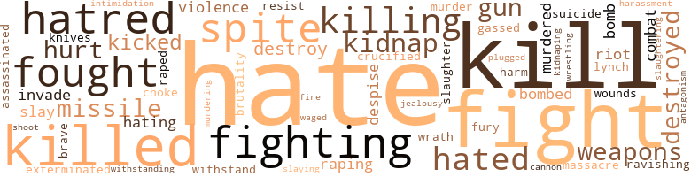
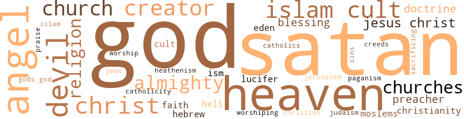

Furlough from Hell, A Fantasy, by Flemister, John T. (1964)
14 music-related terms matched in this text.
Most frequent terms in this topic: scats (2); section (2); jiving (1); dances (1); passages (1)
dance.n.01
Definition: an artistic form of nonverbal communication
| word | sentence |
|---|---|
| dances | After a few dances with our snow English-speaking sisters and a few cups of spiked tea , the conversation came up about the penis and the hidden tail . |
intonation.n.03
Definition: the act of singing in a monotonous tone
| word | sentence |
|---|---|
| chanting | Her chanting , her hissing , her derogatory remarks have been heard around the globe . |
jive.v.01
Definition: dance to jive music; dance the jive
| word | sentence |
|---|---|
| jiving | Even those politicians who claimed they were arguing on the side of the residents of that neighborhood were only jiving . |
| Jive | The masses are n't worried about what ism they Jive under , so long as they are not taken over or taken advantage of . |
music.n.01
Definition: an artistic form of auditory communication incorporating instrumental or vocal tones in a structured and continuous manner
| word | sentence |
|---|---|
| music | They lent support to the development of leadership in commercial life , politics , literature , art , music , agriculture , amusements , education , and religion . |
passage.n.06
Definition: a short section of a musical composition
| word | sentence |
|---|---|
| passages | Other passages seem to imply the existence of a vast subterranean ocean ; the words , however , are susceptible of the sense that the earth was elevated above the level of the sea . |
phrase.n.02
Definition: a short musical passage
| word | sentence |
|---|---|
| phrase | Mr. Capitalist , you often use that phrase " Negro problem . " |
scat.n.01
Definition: singing jazz; the singer substitutes nonsense syllables for the words of the song and tries to sound like a musical instrument
| word | sentence |
|---|---|
| scats | First , the Congressmen , whose first obligation is the protection of citizens , sit on their stinking back scats and allow the citizens to be intimidated and beaten and killed . |
| scats | The Republican Party , in spite of the fact that the Democratic Party has torn their back scats , will have to elect Negroes to important positions to regain its prestige . |
section.n.01
Definition: a self-contained part of a larger composition (written or musical)
| word | sentence |
|---|---|
| section | In the delta section of Mississippi there are 28,000 square miles of the most fertile soil in the world . |
| section | The dumb , back-side snow folks who frequent that great section and make their living there judge the whole Negro race by the lowest , degraded Negroes that they come in contact with . |
swing.n.05
Definition: a style of jazz played by big bands popular in the 1930s; flowing rhythms but less complex than later styles of jazz
| word | sentence |
|---|---|
| jive | The only thing about this statement is that the snow folks taught the black dope users the trade , and introduced jive to them . |
whistle.v.01
Definition: make whistling sounds
| word | sentence |
|---|---|
| whistle | Employed personnel do n't give a whistle about the unemployed . |
zither.n.01
Definition: a musical stringed instrument with strings stretched over a flat sounding board; it is laid flat and played with a plectrum and with fingers
| word | sentence |
|---|---|
| cither | Under cither administration the citizens have been beated , lynched , hanged , tarred and feathered , drowned , robbed , and raped . |
193 violence-related terms matched in this text.
Most frequent terms in this topic: hate (25); kill (13); fight (11); killed (10); fighting (8)
assassinate.v.01
Definition: murder; especially of socially prominent persons
| word | sentence |
|---|---|
| assassinated | I believe Castro will be assassinated eventually , and Cuba will become a part of the United States . |
battle.v.01
Definition: battle or contend against in or as if in a battle
| word | sentence |
|---|---|
| combat | I can sincerely appreciate such an organization , if only to combat all the snow anti-black organizations . |
bombard.v.02
Definition: throw bombs at or attack with bombs
| word | sentence |
|---|---|
| bomb | Cuba will definitely bomb you soon . |
| bombed | I emphatically believe the United States will be bombed , for Castro is the type of human who would pride himself on being the first one named in the history books of the world to bomb the great United States . |
| bomb | I emphatically believe the United States will be bombed , for Castro is the type of human who would pride himself on being the first one named in the history books of the world to bomb the great United States . |
| bombed | America will be bombed , children will be maimed , and arms and legs torn from their bodies , old men and women will suffer in ways never witnessed before . |
bullying.n.01
Definition: the act of intimidating a weaker person to make them do something
| word | sentence |
|---|---|
| intimidation | Our intelligence department defeated the great and powerful German army , yet they ca n't stop the smuggling of narcotics , or the operation of gangsters , or the intimidation of its citizens . |
butcher.v.01
Definition: kill (animals) usually for food consumption
| word | sentence |
|---|---|
| slaughtering | Sons are murdering mothers and dads , daughters are finishing off mothers , young boys are slaughtering sweethearts , snow folks are kidnaping and taking the lives of small babies , snow folks are raping and slaying their victims . |
cannon.n.04
Definition: heavy automatic gun fired from an airplane
| word | sentence |
|---|---|
| cannon | They taught me how to cheat , con , connive , and rob , how to fire a gun , a cannon , and how to make a home-made bomb . |
contemn.v.01
Definition: look down on with disdain
| word | sentence |
|---|---|
| despise | The capitalists in the United States are going to turn their backs on the President ; they are going to despise him , yet though they are powerful moneywise , they are in the minority . |
| despises | Actually , and in all reality and truth , it is the northern snow man the southern snow man despises , but he , the Southerner , can not get even with the northern snow man because of the North 's power and riches , so he constantly preys on the Negro . |
crucify.v.01
Definition: kill by nailing onto a cross
| word | sentence |
|---|---|
| crucified | My people , too , have been crucified by American barbarians . |
defy.v.01
Definition: resist or confront with resistance
| word | sentence |
|---|---|
| withstand | Inside their bodies are hearts of angels , and the courage of a Samson to withstand stabbings and beatings by perfidious snow folks . |
| withstanding | The judges in every state shall be bound thereby , anything in the constitutions or laws of any state to the contrary not withstanding . |
destroy.v.04
Definition: put (an animal) to death
| word | sentence |
|---|---|
| destroyed | The snow man 's industrialization of Africa all but destroyed the native way of living . |
| destroyed | Among the solitude of the heavenly bodies , this is what I found : stars , stars , stars , and more stars of all colors and sizes , stars of incredible volume , obeying the will of God , for if these stars were like the snow man , earth would have been destroyed long ago . |
| destroyed | You have taken our life and our liberty and destroyed our property . |
| destroy | He predicted that a twelve-year-old boy with the strength of twenty men would destroy his whole family of twelve with the thigh and leg of one of his sisters . |
| destroy | " In consequence of the grievous and hopeless wickedness of the world at this time , God resolved to destroy it . |
| destroyed | If the Negro slaves had not decided to fight on the side of the North , the war really would have been won by the South , and therefore the Union would have been destroyed . |
| destroy | I sincerely believe that all so-called Negro reds actually hate the democratic government , and come hell or high water , would do anything to destroy it . |
engage.v.07
Definition: carry on (wars, battles, or campaigns)
| word | sentence |
|---|---|
| waged | The day of acceptance in your Christ has dawned , and Satans angels , those rebel spirits whom he led away , arc cast down with him into the earth , where now a new conflict is about to be waged in a very short time ( 1966 ) , " a calamity in the sky , " a war between the devil and his massive giants and the archangel Michael and his band of angels . |
exterminate.v.01
Definition: kill en masse; kill on a large scale; kill many
| word | sentence |
|---|---|
| exterminated | Only Almighty God knows the correct figure of those exterminated during the years of the snow man 's law-made slavery and down until this day . |
ferociousness.n.01
Definition: the trait of extreme cruelty
| word | sentence |
|---|---|
| brutality | In the Belgian Congo , Africans were treated with unbelievable brutality . |
fight.n.02
Definition: the act of fighting; any contest or struggle
| word | sentence |
|---|---|
| combat | Three hundred and eighty million of Satan 's soldiers will be in combat with Michael and his angels . |
fight.n.05
Definition: a boxing or wrestling match
| word | sentence |
|---|---|
| fight | The capitalists keep going a running game of making the middle class , the poor class snow man , and the black man fight and hate each other . |
| fight | Voice your opinion through every medium that 's available , and as a last resort , if necessary , fight , fight , fight , because all of you will be dead and forgotten tomorrow anyway . |
| fight | Voice your opinion through every medium that 's available , and as a last resort , if necessary , fight , fight , fight , because all of you will be dead and forgotten tomorrow anyway . |
| fight | Voice your opinion through every medium that 's available , and as a last resort , if necessary , fight , fight , fight , because all of you will be dead and forgotten tomorrow anyway . |
| fight | Actually , all Chicago should remember and vote each councilman out of office , for the Harrison-Halsted fight was n't just a neighborhood concern , it was of city-wide interest . |
| fights | Michael fights in Heaven against the dragon , that old serpent called the devil and Satan , who deceived the whole world . |
fight.v.02
Definition: fight against or resist strongly
| word | sentence |
|---|---|
| fighting | Snow man , you claim that you are fighting communism . |
| fought | Now , I am a firm believer in freedom and equality and certain Negro organizations such as the N.A.A.C.P. , the Urban League , the Afro-American group , and those wonderfully courageous and militant sit-in students who have fought so bravely and with perfect discipline . |
| fighting | Certain snow radio and TV personalities are putting their lives , popularity , and jobs on the spot , fighting for your cause . |
| fought | Equality has to be fought for strongly with the voice and finally with the body . |
| fighting | The snow men who are fighting for equal status for their American Negro brothers deserve thanks and praise , and certainly prove that all white folks ai n't bad . |
| fight | These same big-time statesmen fight furiously against civil-rights laws . |
| fighting | The unarmed Negroes in Africa are fighting for their freedom ; likewise the United States can not escape being a similar battleground . |
| fought | Every war that has been fought was started by capitalism , directly and indirectly . |
| fight | Now we will fight for our freedom , and the poor snows who oppose us will still be fighting for capitalism . |
| fighting | Now we will fight for our freedom , and the poor snows who oppose us will still be fighting for capitalism . |
| fight | We will fight each other like heathens , if that is the only way . |
| fight | We have been forced to go to war to fight for your freedom , now the time has come for us to fight you for our freedom . |
| fight | We have been forced to go to war to fight for your freedom , now the time has come for us to fight you for our freedom . |
| fighting | I repeat , if freedom is not worth fighting for , it is not worth having . |
| fighting | The Africans , with sticks and home-made knives , are fighting for their freedom . |
| fighting | The American Negroes are fighting for their right to vote today , most of them not really knowing that Negroes voted in the South many , many years ago . |
| fought | In forming these new governments , Congress ruled that the southern snows who had fought against the Union would not be allowed to vote and hold office . |
| fought | The southern snows who had been little boys during the war had grown up , and since they had not fought against the United States , they were permitted to vote and hold office . |
| fight | If the Negro slaves had not decided to fight on the side of the North , the war really would have been won by the South , and therefore the Union would have been destroyed . |
| fought | Four million Negro slaves fought and won this success for all the American snows . |
| fought | Some of the same local members we fought with , ate with , slept with , and even went to bed with the same snow gal during the war , will not permit us to share an equal dignity with them in peacetime . |
fury.n.01
Definition: a feeling of intense anger
| word | sentence |
|---|---|
| fury | On arriving on the sun , with its devastating and blasting heat , I was surprised to find such a powerful , enormous planet in such a fury , because of the presence of a disobedient creature of God . |
gag.v.06
Definition: cause to retch or choke
| word | sentence |
|---|---|
| choke | But do n't choke now , snow folks , because all white folks ai n't bad . |
gas.v.01
Definition: attack with gas; subject to gas fumes
| word | sentence |
|---|---|
| gassed | The Jewish people lost mothers , fathers , sisters , brothers , aunts , uncles , and friends , like filthy rats , gassed to death like a pack of vicious wild dogs , starved to death as if they w ere inhuman , experimented on like pigs , and used until death for medical experimentation . |
gun.n.01
Definition: a weapon that discharges a missile at high velocity (especially from a metal tube or barrel)
| word | sentence |
|---|---|
| guns | In walked three six-foot snow dicks ( detectives ) with guns drawn . |
| guns | After he finished searching us and was satisfied we did n't have any guns , he said , " Now get out of here , all you jet-black infidels ! |
| guns | The Negro of today fears the snow man even more than his forefathers , who were legally enslaved and lived under the persuasion of guns . |
| gun | They taught me how to cheat , con , connive , and rob , how to fire a gun , a cannon , and how to make a home-made bomb . |
harassment.n.01
Definition: a feeling of intense annoyance caused by being tormented
| word | sentence |
|---|---|
| harassment | These laws , plus harassment by the Ku Klux Klan , were the downfall of the Negroes . |
harm.v.01
Definition: cause or do harm to
| word | sentence |
|---|---|
| harm | I ca n't harm you , even if I could , but there are many , many unbelievers that arc my prey . |
hate.n.01
Definition: the emotion of intense dislike; a feeling of dislike so strong that it demands action
| word | sentence |
|---|---|
| hate | These nasty politicians , instead of spending time practicing hate and accepting money under the table , should have all the damn shacks and shanties torn down and replaced with new , modern buildings . |
| hate | All the intellectual politicians know the conditions that the snows and blacks live in in the South breed hate and filth . |
| hatred | You are not going to continue to be fortunate , year after year , pouring out money secretly to foment race hatred . |
| hate | Yes , he 's dead now , and because of the snow man 's laws , bias , prejudice , and hate , he did not enjoy himself on this earth . |
| hatred | His punishment , however , was swift , his sentence final , for Satan fell from Heaven like lightning , hardened in his sin , with hatred for God . |
| hatred | Yet because he possesses superior hatred for the American snow man , he would see the life blood drained from every Cuban 's body , in order to get even with the snow man . |
| hatred | Castro 's hatred for the American snow man has developed into an idea in his heart - and you know an idea is as hard to destroy as a snake . |
| hate | He is the utopian master of hate , evil , greed , prejudice , and all immoralities . |
| hatred | I was now throughly instilled with his hatred for everything . |
| hatred | On the other hand , there was a minority of the North who hated slavery with perfect hatred , and treated Negroes as men . |
| hate | However , as long as the federal government allows hate organizations to exist , such as the White Citizens Councils , the Ku Klux Klan , and the slanderous John Birch Society , then the all-black Islam cult , by the same token , has the skunky rights to practice their anti-snow tactics . |
| hate | I maintain that if the cult abandons its hate of the snow man , it could grow into the most powerful Negro organization on the face of the earth . |
| hatred | Three of the many reasons that heart disease is the number-one killer in the United States today can be attributed to hatred , jealousy , and prejudice . |
| hatred | Snow women are ninety per cent responsible for all the racial prejudices that exist in the United States , because they spend most of their time raising children and teaching them hatred , and in this respect they have a powerful influence over their weary and simple-minded husbands . |
hate.v.01
Definition: dislike intensely; feel antipathy or aversion towards
| word | sentence |
|---|---|
| hate | How can she have the audacity to teach her offspring to hate because of pigmentation or nationality ? |
| hate | And that he , too , will kill her , rape her , damn his grandma , set fire to the house , rob his preacher , kill his brother as Cain did Abel-all because she taught him to hate ? |
| hate | The youngsters will find out for themselves about their Negro brothers and sisters , and in most cases will learn to hate their parents for lying to them . |
| hate | Even the D.P. has been taught to hate the Negro and not to fraternize with him . |
| hate | When I was in England , France , Belgium , Luxemburg , Holland , and Germany , I talked with many peasants like myself , and they hate you Mr. Snow Man , hate you ! |
| hate | When I was in England , France , Belgium , Luxemburg , Holland , and Germany , I talked with many peasants like myself , and they hate you Mr. Snow Man , hate you ! |
| hate | The capitalists keep going a running game of making the middle class , the poor class snow man , and the black man fight and hate each other . |
| hate | Now there are many hate organizations selling their grievous and putrid propaganda . |
| hate | He has taught his people to hate , and nations to hate nations . |
| hate | He has taught his people to hate , and nations to hate nations . |
| hating | Now people are hating within their own nations . |
| hates | Castro hates the United States snow man so viciously that if Satan himself had volunteered to help him destroy the Americans economically in Cuba he would have accepted . |
| hating | You invest the money to keep them separated , fighting , hating each other . |
| hate | They wo n't hate you , only pity you . |
| hate | I am , because of my earthly sins , one of his , and I hate him as strongly as he hates me . |
| hates | I am , because of my earthly sins , one of his , and I hate him as strongly as he hates me . |
| hate | Gangsterism , hate organizations , false leaders , devilish priests and preachers - all will be eliminated . |
| hated | In this short time , as much as I hated my family , I called on my sister to come and help me . |
| hate | No baby who is divorced from his mother 's womb is born to hate ; he is taught the insidious art as he ventures through life . |
| hated | I have never hated snow folks , although some of my associates dislike me because I do n't hate them . |
| hate | I have never hated snow folks , although some of my associates dislike me because I do n't hate them . |
| hated | On the other hand , there was a minority of the North who hated slavery with perfect hatred , and treated Negroes as men . |
| hate | This , of course , is why , from generation to generation , from century to century , and until this present day , the southern snow man pretends to hate the Negro . |
| hate | I sincerely believe that all so-called Negro reds actually hate the democratic government , and come hell or high water , would do anything to destroy it . |
| hate | Members of the cult that I have met have proved to be extreme fanatics , and hate all Negroes that do not agree with their philosophy and are not dedicated members . |
| hated | Zeno had hated them all . |
| hated | In all truth , the hater suffers much more agony than the hated . |
| hate | The snow woman was taught to hate the black man , to protect her virtue against him . |
hostility.n.02
Definition: a state of deep-seated ill-will
| word | sentence |
|---|---|
| antagonism | Until this day he is the guardian of the Jewish people in their antagonism to godless power and heathenism . |
hurt.v.04
Definition: cause damage or affect negatively
| word | sentence |
|---|---|
| hurt | As long as labor never receives wages in comparison to what it produces , it will continue to hurt itself ; industries will always be menaced by overproduction . |
| hurt | Come what may and no matter who may be hurt , Air . |
invade.v.01
Definition: march aggressively into another's territory by military force for the purposes of conquest and occupation
| word | sentence |
|---|---|
| invades | One of the most disgusting sights to me is a snow prostitute who invades the South Side and submits herself to as many simple-minded blacks as she can get , and then charges them high prices . |
| invade | The F.B.I. , contrary to opinion , will have to invade local areas and attempt to quell gangsterism . |
jealousy.n.01
Definition: a feeling of jealous envy (especially of a rival)
| word | sentence |
|---|---|
| jealousy | Three of the many reasons that heart disease is the number-one killer in the United States today can be attributed to hatred , jealousy , and prejudice . |
kick_back.v.02
Definition: spring back, as from a forceful thrust
| word | sentence |
|---|---|
| kicked | As I reached his home , his daughter , who was a little older than I , opened the door after I had kicked on it three or four times . |
| kicked | She did n't close the door , and as my hands were full I kicked it closed . |
| kicked | As Peter continued to expound , the lights went out ; the chairs were kicked out from under us . |
kidnap.v.01
Definition: take away to an undisclosed location against their will and usually in order to extract a ransom
| word | sentence |
|---|---|
| kidnap | They have even gone so far as to kidnap a few colored boys and hold them for high ransom . |
| kidnap | When a snow man stoops so low as to steal , cheat , rob , and kidnap , what snow folks call uncouth Negroes , then you must have begun to realize that the black brothers are moving up and the snow men sliding down . |
| kidnap | " At this moment my thoughts are triggering actions in Russia , Africa , Cuba , India , Germany , Japan , and America , for it will be from these nations I will kidnap three hundred and eighty million men and women and children to wage war against your God . |
| kidnap | " Tell us , Zeno , how you plan to kidnap three hundred and eighty million people . " |
| kidnaping | Sons are murdering mothers and dads , daughters are finishing off mothers , young boys are slaughtering sweethearts , snow folks are kidnaping and taking the lives of small babies , snow folks are raping and slaying their victims . |
kill.v.10
Definition: cause the death of, without intention
| word | sentence |
|---|---|
| kill | And that he , too , will kill her , rape her , damn his grandma , set fire to the house , rob his preacher , kill his brother as Cain did Abel-all because she taught him to hate ? |
| kill | And that he , too , will kill her , rape her , damn his grandma , set fire to the house , rob his preacher , kill his brother as Cain did Abel-all because she taught him to hate ? |
| kill | " I ought to kill all you black-butt niggers , because you ai n't no damned good anyway . " |
| killed | Now the snow man has not only infiltrated it and killed some of the black policy barons , he has just about ruined it with his devious methods . |
| kill | So the cold war wo n't kill communism ; cash money wo n't realize it . |
| kill | He has been the one to shoot and kill in cold blood , and receive no bullet in retaliation . |
| kill | This so-called democratic society has allowed you to kill , kill , and kill as long as there is a black man ; a few more killings wo n't matter now . |
| kill | This so-called democratic society has allowed you to kill , kill , and kill as long as there is a black man ; a few more killings wo n't matter now . |
| kill | This so-called democratic society has allowed you to kill , kill , and kill as long as there is a black man ; a few more killings wo n't matter now . |
| killed | First , the Congressmen , whose first obligation is the protection of citizens , sit on their stinking back scats and allow the citizens to be intimidated and beaten and killed . |
| kills | Yet the " my country 't is of thee " land slanders him in return - segregates him - and kills him . |
| kill | " My mission , Bennie , is to see that three hundred and eighty million mortals kill themselves . " |
| killed | If Castro is n't killed very soon , he will be the first enemy of the United States , because as far as the United States is concerned he is doomed . |
| kill | If you want to kill your snow daughters for marrying Negroes , then you had better start killing them now , because when love beckons , one must follow . |
| killing | If you want to kill your snow daughters for marrying Negroes , then you had better start killing them now , because when love beckons , one must follow . |
| killing | The American snows and blacks will be killing each other , and God 's children will bleed profusely . |
| kill | The snow man introduced integration , and now , because the Negro wants to sustain it , they want to kill us . |
| killed | Well , with all the Africans who have been killed , the total should now be quite a bit less . |
| kill | Water will be contaminated , plants generating electricity will be demolished , live wires will kill many . |
| killed | I was killed in bed with another man 's wife . |
| kill | Ele said my mission would be to tempt three hundred and eighty million mortals to kill themselves . |
| killed | By the time I got to the kitchen , Peter had taken out two glasses and had already killed a good shot . |
| killed | Once before we shared an uneasy feeling , and it turned out to be disastrous Our father was killed in an automobile accident . |
| killed | Kallie 's husband was killed in World War II and she has n't remarried . |
| killed | He was killed at a very early age . |
| killing | Gangsters are still killing at will ; dope is still being smuggled into the United States ; county and city and state officials are still raiding and ravishing public funds . |
| Kill | Kill out the youth of a nation and you 've destroyed the nation . |
| killed | It does n't precisely look for snow neighborhoods to live in , but since the snow folks connived and killed the Indians and took their country from them , they just happen to be lousy everywhere . |
| killing | Every day of my life that I pick up a paper I read where snow folks are killing each other . |
killing.n.01
Definition: an event that causes someone to die
| word | sentence |
|---|---|
| killings | This so-called democratic society has allowed you to kill , kill , and kill as long as there is a black man ; a few more killings wo n't matter now . |
killing.n.02
Definition: the act of terminating a life
| word | sentence |
|---|---|
| killing | No free-born human could have carried out the killing of millions of Jews without the influence of Satan himself . |
knife.n.02
Definition: a weapon with a handle and blade with a sharp point
| word | sentence |
|---|---|
| knives | The Africans , with sticks and home-made knives , are fighting for their freedom . |
lynch.v.01
Definition: kill without legal sanction
| word | sentence |
|---|---|
| lynch | The only solution is to lynch them , hang them , shoot them in the head , put heavy loads on their feet and legs and dump them into the rivers , as you have done to American Negroes . |
malice.n.01
Definition: feeling a need to see others suffer
| word | sentence |
|---|---|
| spite | In spite of the fact that the President of the United States is gifted with his special grace , fulfillment of his obligations will not be a bed of roses . |
| spite | The Republican Party , in spite of the fact that the Democratic Party has torn their back scats , will have to elect Negroes to important positions to regain its prestige . |
| spite | In spite of the many handicaps , the achievements of the Negroes from the close of the Civil War to about 1920 showed racial characteristics of high ambition and great capacity for development . |
| spite | I finally dozed off , and in spite of my weird experience I slept peacefully . |
| spite | The old place , in spite of its age , was in surprisingly good condition . |
| spite | In spite of the fact that this structure was huge , it was only intended to float on the water , and was not in the proper sense of the word a ship . |
| spite | I put on trousers and a T-shirt , because the weather was quite warm for December , in spite of its ugliness , and anticipating rain I put on my slicker . |
murder.n.01
Definition: unlawful premeditated killing of a human being by a human being
| word | sentence |
|---|---|
| murder | The chief or his agents can tempt mortals to the point of murder . |
| slaying | Sons are murdering mothers and dads , daughters are finishing off mothers , young boys are slaughtering sweethearts , snow folks are kidnaping and taking the lives of small babies , snow folks are raping and slaying their victims . |
murder.v.01
Definition: kill intentionally and with premeditation
| word | sentence |
|---|---|
| murdered | The lakes and rivers of Mississippi , Georgia , Alabama , Louisiana , and Arkansas will , one of these days , begin a never stopping wail for all the black sons of God who have been murdered and whose bodies have been cast into their depths . |
| slay | The ones who slay the masses will be the capitalists ' soldiers . |
| slay | Even a poor soldier , who also has to pay taxes yet is underpaid , will take orders indirectly from the capitalists and slay his neighbors and brothers . |
| murdered | What really made it ironic was the fact that it was his own bed that the husband murdered me in . |
| murdering | Sons are murdering mothers and dads , daughters are finishing off mothers , young boys are slaughtering sweethearts , snow folks are kidnaping and taking the lives of small babies , snow folks are raping and slaying their victims . |
open_fire.v.01
Definition: start firing a weapon
| word | sentence |
|---|---|
| fire | They taught me how to cheat , con , connive , and rob , how to fire a gun , a cannon , and how to make a home-made bomb . |
pain.v.02
Definition: cause emotional anguish or make miserable
| word | sentence |
|---|---|
| hurt | Now your turn has arrived - and it is going to hurt . |
| hurt | In the execution of his duties , lus father can be hurt and many of his father 's friends and associates , yet if I have judged aright this handsome , intelligent young mortal who has reached the heights , as much as lie loves his family , he would not let it stand in the way if truth were the issue . |
projectile.n.01
Definition: a weapon that is forcibly thrown or projected at a targets but is not self-propelled
| word | sentence |
|---|---|
| missiles | You arc , because the law is your made law , because you have the army , the navy , the marines , the air force , the atom bombs , the hydrogen bombs , and the missiles to continue to massacre . |
| missile | The great United States was not chosen by God to be the first to send a missile into outer space ( said Zeno ) - it was second . |
| missiles | Russia , his cunning buddy , would also give Mr. Castro missiles and con him into bombing the United States . |
| missiles | We Americans are living in a critical period ( Zeno said ) ; we are building fear in our hearts , fear of the atom and hydrogen bombs , of rockets and devastating missiles . |
punch.v.01
Definition: deliver a quick blow to
| word | sentence |
|---|---|
| plugged | The holes in my head were plugged up with part of the brains of Satan himself . |
rape.v.01
Definition: force (someone) to have sex against their will
| word | sentence |
|---|---|
| raping | After raping and ravishing our funds , they institute new ways of putting taxes on citizens . |
| ravishing | After raping and ravishing our funds , they institute new ways of putting taxes on citizens . |
| raped | Under cither administration the citizens have been beated , lynched , hanged , tarred and feathered , drowned , robbed , and raped . |
| raping | Sons are murdering mothers and dads , daughters are finishing off mothers , young boys are slaughtering sweethearts , snow folks are kidnaping and taking the lives of small babies , snow folks are raping and slaying their victims . |
resist.v.04
Definition: withstand the force of something
| word | sentence |
|---|---|
| resist | It 's true that whoever is elected , even if it is someone of your own personal choice , may be seduced into becoming a stooge for the powerful unseen , yet he might also resist and refuse to be a Judas . |
riot.n.01
Definition: a public act of violence by an unruly mob
| word | sentence |
|---|---|
| riots | The majority of the poor citizens know that the snows who instigate race riots across the United States are paid employees . |
| riot | One of the most embarrassing sights I 've ever experienced was a trivial race riot in Chicago . |
shoot.v.02
Definition: kill by firing a missile
| word | sentence |
|---|---|
| shoot | They sincerely do n't care whether they live with Negroes , eat with them , sleep with them , love them , or shoot craps with them . |
slaughter.n.03
Definition: the savage and excessive killing of many people
| word | sentence |
|---|---|
| massacre | You arc , because the law is your made law , because you have the army , the navy , the marines , the air force , the atom bombs , the hydrogen bombs , and the missiles to continue to massacre . |
| slaughter | This group 's impious schemes , besides keeping the masses separated , seek to slaughter them through taxation . |
suicide.n.01
Definition: the act of killing yourself
| word | sentence |
|---|---|
| suicide | If you ca n't take it , sir , then commit suicide now , for as sure as the moon wanes and waxes , and the birds migrate , it 's going to happen . |
violence.n.01
Definition: an act of aggression (as one against a person who resists)
| word | sentence |
|---|---|
| violence | Oh , no , a snow man would n't do such acts of violence to more than six million snow people . |
| violence | Its violence would have no equal . |
weapon.n.01
Definition: any instrument or instrumentality used in fighting or hunting
| word | sentence |
|---|---|
| weapons | China has been noted for her passive resistance , which she is using to advantage today , until she can accumulate weapons enough to give her the confidence to wage total war . |
| weapons | " What kind of weapons will you use , Zeno ? " |
| weapons | " Psychological weapons , Bennie . |
| weapons | Our weapons are tiny spears that upon contact create a deafening noise . |
weather.v.01
Definition: face and withstand with courage
| word | sentence |
|---|---|
| brave | The ground hallowed by the blood of brave men , black and white , is again the setting for strife ; not man against man , but man and God against the forces of ignorance and misunderstanding . |
wound.n.01
Definition: an injury to living tissue (especially an injury involving a cut or break in the skin)
| word | sentence |
|---|---|
| wounds | Amid the historic sites of the Civil War , where grass grows green over old battlefields , where wounds of the spirit have been healed by the touch of time , and where enemies in life gained comradeship in death , freedom riders are winning victories as great as those won in battle . |
wrath.n.01
Definition: intense anger (usually on an epic scale)
| word | sentence |
|---|---|
| wrath | Build up fear of God in your heart , for his wrath will be billions of times more frightening than manmade bombs . |
wrestle.v.01
Definition: combat to overcome an opposing tendency or force
| word | sentence |
|---|---|
| wrestling | Satan is the ruler of the darkness of this world , the spiritual power of wickedness in heavenly places , and most of all by wrestling with the soul of man . |
342 religion-related terms matched in this text.
Most frequent terms in this topic: God (89); Satan (70); Heaven (35); angels (19); Christ (13)
blessing.n.05
Definition: the act of praying for divine protection
| word | sentence |
|---|---|
| blessing | Freedom may have been a gift , but its blessing has to be earned when the shackles of slavery have been stricken from the Negroes . |
| blessing | He still needs the loving , substantial support of the great snow man to bring him to the day of full development , a blessing to himself and to others . |
| blessing | There was no blessing . |
catholic.n.01
Definition: a member of a Catholic church
| word | sentence |
|---|---|
| Catholics | Forty-five thousand Negroes were listed as Catholics in New Orleans , due doubtless to the French and Spanish Catholic influence and tradition . |
catholicism.n.01
Definition: the beliefs and practices of a Catholic Church
| word | sentence |
|---|---|
| catholicity | Several presidents of the United States have been accused of racial catholicity in sex . |
christendom.n.01
Definition: the collective body of Christians throughout the world and history (found predominantly in Europe and the Americas and Australia)
| word | sentence |
|---|---|
| Christianity | India 's religions include Judaism , Buddhism , Hinduism , Sikhism , Mohammedanism , Zoroastrianism , and Christianity . |
| Christianity | Christianity is the greatest civilizing , molding , uplifting power on this globe , and it is a sad defect in any institution of higher learning if it does not bring those under its care into the closest possible relationship with religion . |
christian.n.01
Definition: a religious person who believes Jesus is the Christ and who is a member of a Christian denomination
| word | sentence |
|---|---|
| Christian | There is a Negro Young Men 's Christian Association , two Negro brandies of the public library , and three public parks for Negroes . |
church.n.02
Definition: a place for public (especially Christian) worship
| word | sentence |
|---|---|
| church | The characteristic rural church for Negroes was a small , rough one-room building constructed of crude materials and was wholly unsuited for any sort of activity except the holding of platform meetings . |
| church | One might travel over all of Louisiana , Alabama , North Carolina , Georgia , and Tennessee without finding a Negro church that was not a plain , weatherboard building furnished with ordinary two strips across the back benches . |
| churches | The snow man built churches , school-houses , hospitals , old folks ' homes , and orphan asylums . |
| churches | In whole districts of the South are to be found Negro churches that are nothing more than hovels . |
| church | Also forty years ago the Negro church in New Orleans had a total attendance of about 35,000 on an average Sunday , which left about 75,000 who did n't attend regularly . |
| churches | The seating capacity of all the Negro churches in New Orleans , forty years ago , was only 65,000 , leaving 45,000 unprovided for . |
| churches | The Roman Catholic Church had nine churches for Negroes that were headed by white priests . |
church.n.04
Definition: the body of people who attend or belong to a particular local church
| word | sentence |
|---|---|
| churches | Besides teaching it in the home , it is taught in the churches , Sunday schools , private schools , and all snow schools . |
| Church | The Roman Catholic Church had nine churches for Negroes that were headed by white priests . |
| church | The archangel Michael , with whom the devil had many battles , is the one who is entrusted with the defense of God 's church against the opposing powers in the invisible world of spirits . |
church_service.n.01
Definition: a service conducted in a house of worship
| word | sentence |
|---|---|
| church | The Negro , being essentially religious , formed various groups and rented stores , dwelling houses , and often cellars for church services . |
creed.n.01
Definition: any system of principles or beliefs
| word | sentence |
|---|---|
| creeds | All the industries in the United States are manned by snows of all creeds and nationalities , but not Negroes . |
cult.n.03
Definition: followers of an unorthodox, extremist, or false religion or sect who often live outside of conventional society under the direction of a charismatic leader
| word | sentence |
|---|---|
| cult | Congressmen who are members of the Birch Society , Ku Klux Klan , White Citizens Council , and Islam cult are detrimental to the federal government , but I guess the people with authority who could see to it that these scoundrels are removed from their positions are of the opinion that all white folks ai n't bad . |
| Cult | Master Satan has many supporters in America ; the Ku Klux Klan , The White Citizens ' Council , the Islam Cult , the Birch Society , the National Manufacturers Association , and many others , some secret , organizations . |
| cult | If the federal government allows the White Citizens ' Councils to live , the Ku Klux Klan to survive , then this all-Negro cult has just as much right to oppose the snow race . |
| cult | I personally do not believe in snow supremacy or black supremacy , therefore I am opposed to the White Citizens Councils , the Ku Klux Klan , and the all-black Islam cult . |
| cult | Members of the cult that I have met have proved to be extreme fanatics , and hate all Negroes that do not agree with their philosophy and are not dedicated members . |
| cult | The only thing I have against the Islam cult is its advocacy of black supremacy . |
| cult | As the cult preaches , Negroes should be in business for themselves to gain great economic power . |
| cult | The Islam cult operates a school that is more than the other millionaire Negroes have done . |
| cult | I maintain that if the cult abandons its hate of the snow man , it could grow into the most powerful Negro organization on the face of the earth . |
| cult | When I think about these unfair , inhuman , barbarian snow organizations , believe me , I wish all members of the Islam cult Godspeed . |
doctrine.n.01
Definition: a belief (or system of beliefs) accepted as authoritative by some group or school
| word | sentence |
|---|---|
| doctrine | The sight of these big fat snow women and their practice of Communist doctrine proved that pigmentation has no relation whatever to ignorance and stupidity . |
| doctrine | Whatever you snow folk call your Creator - Jehovah , Allah , Buddha , Christ , or God - your filthy actions on this earth arc not His doctrine . |
| ism | The masses are n't worried about what ism they Jive under , so long as they are not taken over or taken advantage of . |
| isms | Our isms , capitalism or democracy-ism , whatever you may call it , treats the masses the same as does communism . |
| doctrines | They wanted no part of communism - but when a stomach is really hungry , it does n't care who feeds it or what his doctrines are . |
eden.n.01
Definition: any place of complete bliss and delight and peace
| word | sentence |
|---|---|
| Heaven | How can she teach him " Our Father , which art in Heaven , " or " Now I lay me down to sleep , " and then turn around and tell the innocent thing that " all black folks are diarrhea , " do n't fraternize with them , for they are unclean , dumb , ignorant , shiftless , thieves , and morons . |
| heavens | Light , as the primary condition of all life , the heavens as ministers of the earths , the dry land , for his home , " grass for his cattle , and herbs for the service of man . " |
| Heaven | But as sure as there is a Heaven and Hell , we will receive it , and it wo n't be gradual . |
| Heaven | These gigan - tic worlds , hurling along at frightful speed , smashing headlong into one another ; the conflagration lighting up the black desert of space overhead ; the glowing blood-red gases bursting into devouring flames and streaming across the vastness of the universe ; the awful thunders shaking the foundations of the earth and rocking the throngs of Heaven ! |
| heavens | I gaze farther into the heavens and wonder how much farther up are the thrones of God . |
| Heaven | His punishment , however , was swift , his sentence final , for Satan fell from Heaven like lightning , hardened in his sin , with hatred for God . |
| Heaven | God in Heaven knows the wonderful part the American Negro played during the Spanish-American War , the Civil War , and World Wars I and II - yet the snow man has constantly showed the public only the part the snow soldier played . |
| Heaven | " I want to know about Heaven . |
| Heaven | I do n't want to die , yet when I do I would like to go to Heaven , because from what Bennie told me of your description of Hell , I know I want no part of it . " |
| Heaven | Heaven is not for drunkards like you , Peter ( Zeno said ) . |
| Heaven | Heaven is a firmament , a solid expanse , and through its open lattices or doors the dew and snow and hail are poured upon the earth . |
| Heaven | In Heaven , like gems or golden lamps , the stars are fixed to give light to the earth , and to regulate the seasons . |
| heaven | Satan 's greatest dream , his most ultimate desire , is the conquering of his former heaven . |
| Heaven | He was an archangel , one of the princes of Heaven . |
| Heaven | Sin introduced discord and conflict , not only on earth , but also in Heaven , by the fall of demons . |
| Heaven | And as little as it was possible for man to restore peace on earth , so little was this possible for the angels in Heaven . |
| Heaven | It is the blood of the cross that restored peace , even in Heaven . |
| Heaven | It is only now , after Christ has obtained the victory fully and legally , that Michael and his angels are able to cast Satan and his servants out of Heaven . |
| Heaven | During the coming of Christ , the devil not only ruled on earth , but was also still in Heaven . |
| Heaven | The devil was completely cast out of Heaven after the son was raised to the throne of God . |
| Heaven | It was only after Christ had risen that Michael and his angels overcame the resisting devil and his angels , and cast the dark powers and principalities of Heaven to the earth . |
| Heaven | Demons were in Heaven just like the other angels until the ascension of Christ and , like them , they influenced earth from their abodes in Heaven , in which there are many mansions . |
| Heaven | Demons were in Heaven just like the other angels until the ascension of Christ and , like them , they influenced earth from their abodes in Heaven , in which there are many mansions . |
| Heaven | As Heaven was not yet shut against the devils , Satan appeared before Jehovah , along with the other sons of God , and in the same way he stood besides the angels of Jehovah . |
| Heaven | So Satan was in Heaven till the ban of sin and death resting on humanity was broken . |
| Heaven | Also the whole universe , in its two great divisions , the worlds of earth and Heaven , owes to Christ alone , the restoration of harmony . |
| Heaven | When he was cast down from the office of accuser in Heaven , his voice was heard before God no more . |
| Heaven | For thousands of years Master Satan has been planning the invasion of Heaven , although after being cast out of Heaven to earth he is now cast into the bottomless pit , bound and rendered harmless . |
| Heaven | For thousands of years Master Satan has been planning the invasion of Heaven , although after being cast out of Heaven to earth he is now cast into the bottomless pit , bound and rendered harmless . |
| Heaven | Michael was an archangel , one of the first princes of Heaven . |
| Heaven | Michael fights in Heaven against the dragon , that old serpent called the devil and Satan , who deceived the whole world . |
| Eden | The man Adam was placed in a garden that the Lord God had planted " Eastward in Eden , " for the purpose of dressing and keeping it . |
| Eden | While Adam was in the Garden of Eden , the beasts of the field and the fowls of the air were brought to him to be named , and whatsoever he called every living creature , that was his name . |
| Heaven | The rainbow in the cloud , seen by every nation under Heaven , is an unfailing witness to the truth of your God . |
| Heaven | It will be witnessed by every nation under Heaven . |
| Heaven | I , Zeno , will advance toward Heaven at the head of the men , women , and children of war . |
| Heaven | " If what you say is true , how will you advance to Heaven ? " |
| Heaven | Satan says this will frighten and confuse the angels , and that we can conquer them and Heaven . " |
| Heaven | They started laughing and jesting , and one said , ' Let us build a city and a tower so tall that the top may reach into Heaven . ' |
| Heaven | These children of men built the tower rapidly , and it was soon reaching into Heaven ( which actually made them truly the first men in outer space ) . |
god.n.03
Definition: a man of such superior qualities that he seems like a deity to other people
| word | sentence |
|---|---|
| God | God is said to make the sun rise , the day spring , the stars shine , and so on . |
| God | The universe exists , not independent of God by any necessity or any inherent power , nor yet contemporaneous with God , as being coexistent with Him , nor yet in opposition to God , as a hostile element , but dependent upon Him , subsequent to Him , and in subjection to Him . |
| God | The universe exists , not independent of God by any necessity or any inherent power , nor yet contemporaneous with God , as being coexistent with Him , nor yet in opposition to God , as a hostile element , but dependent upon Him , subsequent to Him , and in subjection to Him . |
| God | The universe exists , not independent of God by any necessity or any inherent power , nor yet contemporaneous with God , as being coexistent with Him , nor yet in opposition to God , as a hostile element , but dependent upon Him , subsequent to Him , and in subjection to Him . |
| God | Another inevitable certainty is that he will strike again , and I pray to Almighty God that he will be caught . |
| God | We can thank God , however , that all white folks ai n't bad . |
| God | They even called a representative of God a " nigger lover " and other viles names . |
| God | Now Satan himself respects a disciple of God . |
| God | Do n't be afraid , Mr. Snow Man - if God is in your corner , who can be against you ? |
| God | You are n't certain now that God is on your side , are you ? |
| God | Only Almighty God knows the correct figure of those exterminated during the years of the snow man 's law-made slavery and down until this day . |
| God | The lakes and rivers of Mississippi , Georgia , Alabama , Louisiana , and Arkansas will , one of these days , begin a never stopping wail for all the black sons of God who have been murdered and whose bodies have been cast into their depths . |
| God | Only God can make a tree , and those trees that have been abused and humiliated by being used to execute a creature of God will also begin to weep , one of these days , and never cease . |
| God | Only God can make a tree , and those trees that have been abused and humiliated by being used to execute a creature of God will also begin to weep , one of these days , and never cease . |
| God | God did not mean for us to be separated . |
| God | God bless those sit-in students . |
| God | God Himself said a child would lead the way . |
| God | He has gained the world but has lost his soul ; the snow man has disappointed his Maker , his Creator , his Almighty God , who gave him the ability to progress and rule . |
| God | God gave the snow man his chance to rule the world , leaving it up to him in every way . |
| God | The black man of God has been the depressed one of the earth . |
| God | The great United States was not chosen by God to be the first to send a missile into outer space ( said Zeno ) - it was second . |
| God | Neither was it chosen by God to send a man into outer space . |
| God | God has been kind to the Americas , however , specifically the United States . |
| God | My father was , however , in his own rights a respecter of all God 's creatures and children . |
| God | God saw fit to give you the power to rule , and you made slaves of us through your laws . |
| God | God also gave you the sun , shedding its light and heat and radiation so that you could develop into a normal human being . |
| God | The great moon , like all the other heavenly bodies , obeys the law of God . |
| God | On arriving on the sun , with its devastating and blasting heat , I was surprised to find such a powerful , enormous planet in such a fury , because of the presence of a disobedient creature of God . |
| God | If , however , the laws of God were disobeyed as man has disobeyed Him , what would happen ? |
| God | Everything that God created swings in beautiful and perfect equilibrium . |
| God | I gaze farther into the heavens and wonder how much farther up are the thrones of God . |
| God | His angelic intelligence made him think he was more powerful than his Creator , and he rebelled against God forever . |
| God | His punishment , however , was swift , his sentence final , for Satan fell from Heaven like lightning , hardened in his sin , with hatred for God . |
| God | Satan slanders God to man and man to God . |
| God | Satan slanders God to man and man to God . |
| God | Slandering man to God is a part of his great work of temptation to evil . |
| God | The effect , of course , is to stir up the spirit of freedom in man so he will seek a forced independence , and it is but a slight step further to impute falsehood or cruelty to God . |
| God | Build up fear of God in your heart , for his wrath will be billions of times more frightening than manmade bombs . |
| God | I firmly believe that the President of the United States , Mr. Kennedy , will top the list as the greatest ; President Kennedy will receive special grace from God , for his intelligence is incomparable ; his foresight unmatchable . |
| God | Kennedy is God 's choice not only to straighten out the United States , but to help sterilize the whole troubled world , which is a very big task . |
| God | Only an angel of God can perform this miracle . |
| God | Everywhere that he has ever ventured , Almighty God has protected him for this great honor of honors . |
| God | He will try , but to no avail , for as the Scripture goes , " If God is for you , who can be against you ? " |
| God | The American snows and blacks will be killing each other , and God 's children will bleed profusely . |
| God | When God made mail it was his will that he should dominate the earth , therefore all bias and prejudices are the work of man . |
| God | When God sees fit to stop it , as He is now doing , the black race will ascend to rulership . |
| God | God will sit on Mis throne and observe this rulership without interference . |
| God | I honestly believe that it is God 's favorite land . |
| God | This is God 's will , for I believe that America will in all truth someday be the land of the free , and that through America the life of the world will be extended . |
| God | The ground hallowed by the blood of brave men , black and white , is again the setting for strife ; not man against man , but man and God against the forces of ignorance and misunderstanding . |
| God | Mr. Snow Man , your Declaration of Independence also states : When in the course of human events , it becomes necessary for one people to dissolve the political bands which have connected them with another , and to assume among the powers of the earth , the separate and equal station to which the laws of nature and of nature 's God entitle them , a decent respect to the opinion of mankind requires that they should declare the causes which impels them to the separation . |
| God | God in Heaven knows the wonderful part the American Negro played during the Spanish-American War , the Civil War , and World Wars I and II - yet the snow man has constantly showed the public only the part the snow soldier played . |
| God | The sun sustains a relation to the natural world that is designedly analogous to that of God to the moral universe . |
| God | It was miraculous and instantaneous when God said , " and then it was , " but the progressiveness , and consequently the individuality of the acts , does involve an idea of time as elapsing between the completion of one and the commencement of another , otherwise the work of creation would have resolved itself into a single continuous act . |
| God | I began to hear other sinful souls screaming and shouting and cursing God . |
| God | I was now cursing God most vehemently . |
| God | " God is a sun " ; " Our God is a consuming fire " ; " God is light , and in Him is no darkness at all . " |
| God | As all light emanates from the sun , so all truth proceeds from God . |
| God | Zeno also said that the 1960 's in general would be devastating , because man 's inhumanity to man is sickening to the spirit of God . |
| God | This firm vault is as strong as molten looking glass ; it is transparent like pellucid sapphire ; and as splendid as crystal , over which rests the throne of God and which is open for the descent of angels , or for prophetic visions . |
| God | Your God never created anything evil . |
| God | Master Satan 's general object is to break the bond between man and God and the bonds of truth and love that bind men to each other . |
| God | The devil was completely cast out of Heaven after the son was raised to the throne of God . |
| God | The archangel Michael , with whom the devil had many battles , is the one who is entrusted with the defense of God 's church against the opposing powers in the invisible world of spirits . |
| God | He also accused the pious Job , asserting that even he was not a just man and received permission from God to tempt him to the utmost . |
| God | When he was cast down from the office of accuser in Heaven , his voice was heard before God no more . |
| God | Demons arc spiritual beings who are enemies of God and possess the power to afflict man not only with bodily disease , but with spiritual pollution also . |
| God | They recognize the Lord as the Son of God and acknowledge the power of His name , and they look forward to the judgment to come . |
| God | As the archangel Gabriel represents the ministration of the angels toward man , so Michael is the type and leader of their strife , in God 's name , and in his strength , against the power of Satan . |
| God | He is said to have been created in the image and likeness of God , which probably points to the divine pattern and archetype after which man 's intelligent nature was fashioned ( reason , understanding , imagination , volition and so on being attributes of God ) , and man alone of the animals of the earth being possessed of a spiritual nature that resembles God 's nature . |
| God | The name Adam was not confined to the father of the human race , but , like homo , was applicable to woman as well , so that we find it said in the Bible : " This is the book of the history of Adam in the day that God created Adam in the likeness of God , made he them , male and female created he them , and called their name Adam in the day when they were created . " |
| God | The man Adam was placed in a garden that the Lord God had planted " Eastward in Eden , " for the purpose of dressing and keeping it . |
| God | The first man created by God was neither a white man nor a black man . |
| God | Upon the failure of a companion suitable for Adam among the creature thus brought to him to be named , the Lord God caused a deep sleep to fall upon him , and thereupon performed the first operation on the face of the earth . |
| God | Adam , the first male sinner on earth , the only man not to be divorced from a woman 's womb , whose rib brought the first woman into the earth , lived to be nine hundred and thirty years old , so it would seem that the death that resulted from his sin was the spiritual death of alienation from God . |
| gods | Now we have a new interpretation , that the sons of the Elohim are the servants of worshipers of false gods ( taking Elohim to mean not God , but gods ) who arc supposed to have belonged to a distinct pre-Adamite race . |
| God | Now we have a new interpretation , that the sons of the Elohim are the servants of worshipers of false gods ( taking Elohim to mean not God , but gods ) who arc supposed to have belonged to a distinct pre-Adamite race . |
| gods | Now we have a new interpretation , that the sons of the Elohim are the servants of worshipers of false gods ( taking Elohim to mean not God , but gods ) who arc supposed to have belonged to a distinct pre-Adamite race . |
| God | " In consequence of the grievous and hopeless wickedness of the world at this time , God resolved to destroy it . |
| God | God had put the breath of life in man and also a spiritual part , capable of recognizing , loving and worshiping Him , but man had sunken down so much into the lowest and most debasing of fleshly pleasures that he had almost extinguished the higher light within him . |
| God | After giving Noah the necessary instructions for the building of the ark , God told him the purpose for which it was designed . |
| God | And everything that God commanded of Noah , he did . |
| God | Then God remembered Noah , and made a wind to pass over the earth so that the waters were assuaged . |
| God | The Lord accepted the sacrifice of Noah as acknowledgment on the part of man that he desired reconciliation and communion with God . |
| God | Next , God made provision for the security of human life . |
| God | It is as such that your God made his covenant with him , and hence selected a natural phenomenon as the sign of that covenant . |
| God | The black man is not trying to disturb or abrogate anything the snow folks have accumulated , but only to own some of the beautiful varieties that God put here for man . |
| God | You ca n't blame the world of gangsterism on Negroes , thank God . |
| God | After watching them lower his body into the earth , I said to myself , " So long , Zeno , and may God bless you . " |
| God | This earth belongs to God . |
| God | Every native Negro American and every native snow American are just as much related as Jesus Christ is to God , but they wo n't permit themselves the thought , and on this point they keep their minds opaque . |
godhead.n.01
Definition: terms referring to the Judeo-Christian God
| word | sentence |
|---|---|
| Almighty | Another inevitable certainty is that he will strike again , and I pray to Almighty God that he will be caught . |
| Almighty | Only Almighty God knows the correct figure of those exterminated during the years of the snow man 's law-made slavery and down until this day . |
| Creator | He has betrayed his fellow human and disappointed his Creator . |
| Creator | He has gained the world but has lost his soul ; the snow man has disappointed his Maker , his Creator , his Almighty God , who gave him the ability to progress and rule . |
| Almighty | He has gained the world but has lost his soul ; the snow man has disappointed his Maker , his Creator , his Almighty God , who gave him the ability to progress and rule . |
| Creator | His angelic intelligence made him think he was more powerful than his Creator , and he rebelled against God forever . |
| almighty | Let 's face the almighty truth . |
| Creator | Your forefathers said that all men are created equal , that they are endowed by their Creator with certain unalienable rights , and that among these are life , liberty and the pursuit of happiness . |
| Creator | It will be destroyed , but only by its Creator . |
| Creator | As he must know from his past life , he has been blessed by his Creator . |
| Almighty | Everywhere that he has ever ventured , Almighty God has protected him for this great honor of honors . |
| Creator | His formation was the ultimate object of the Creator . |
hell.n.01
Definition: any place of pain and turmoil
| word | sentence |
|---|---|
| hell | That is why I maintain that the sadistic heads of these southern governments should be forced by law to honor the supreme laws of the land or be sent back into the depths of hell from whence they came . |
| Hell | Have you not lived in Hell on this earth ? |
islam.n.01
Definition: the civilization of Muslims collectively which is governed by the Muslim religion
| word | sentence |
|---|---|
| Islam | Congressmen who are members of the Birch Society , Ku Klux Klan , White Citizens Council , and Islam cult are detrimental to the federal government , but I guess the people with authority who could see to it that these scoundrels are removed from their positions are of the opinion that all white folks ai n't bad . |
| Islam | Master Satan has many supporters in America ; the Ku Klux Klan , The White Citizens ' Council , the Islam Cult , the Birch Society , the National Manufacturers Association , and many others , some secret , organizations . |
| Islam | Now we have the Islam cult , an all-black , anti-white society . |
| Islam | I personally do not believe in snow supremacy or black supremacy , therefore I am opposed to the White Citizens Councils , the Ku Klux Klan , and the all-black Islam cult . |
| Islam | This all-black Islam cult , if allowed to grow in stature and power , would be deadly venom to the human race . |
| Islam | However , as long as the federal government allows hate organizations to exist , such as the White Citizens Councils , the Ku Klux Klan , and the slanderous John Birch Society , then the all-black Islam cult , by the same token , has the skunky rights to practice their anti-snow tactics . |
| Islam | The only thing I have against the Islam cult is its advocacy of black supremacy . |
| Islam | The Islam cult operates a school that is more than the other millionaire Negroes have done . |
| Islam | When I think about these unfair , inhuman , barbarian snow organizations , believe me , I wish all members of the Islam cult Godspeed . |
jerusalem.n.01
Definition: capital and largest city of the modern state of Israel (although its status as capital is disputed); it was captured from Jordan in 1967 in the Six Day War; a holy city for Jews and Christians and Muslims; was the capital of an ancient kingdom
| word | sentence |
|---|---|
| Jerusalem | He accused the high priest Joshua and Jerusalem and Israel that their guilt was not yet atoned for , and that they were therefore unworthy of the mercy which the Lord had shown them in leading them out of the captivity . |
jesus.n.01
Definition: a teacher and prophet born in Bethlehem and active in Nazareth; his life and sermons form the basis for Christianity (circa 4 BC - AD 29)
| word | sentence |
|---|---|
| Jesus | They have betrayed the citizens that elected them to office just as Judas betrayed Jesus Christ . |
| Jesus | When Jesus Christ died on the cross ( not just for you , Mr. Snow Man , but for all men ) it was then time for all men to share freedom . |
| Jesus | Not since the days of Jesus Christ have we possessed an individual with such authority and power who was also interested in the masses . |
| Jesus | For as sure as Jesus Christ allowed the blood to be drained from his holy body to free all of us , so must we likewise bleed to achieve our long-wanted freedom . |
| Jesus | Every native Negro American and every native snow American are just as much related as Jesus Christ is to God , but they wo n't permit themselves the thought , and on this point they keep their minds opaque . |
jew.n.01
Definition: a person belonging to the worldwide group claiming descent from Jacob (or converted to it) and connected by cultural or religious ties
| word | sentence |
|---|---|
| Jews | No free-born human could have carried out the killing of millions of Jews without the influence of Satan himself . |
| Hebrews | With regard to the earth 's body , the Hebrews conceived its surface to be an immense disk , supported like the flat roof of an Eastern house by pillars that rest on solid foundations . |
| Hebrew | " The Bible evidence seems , at first sight , to class the Hebrew as a Hamitic , rather than a Semitic , form of speech . |
judaism.n.01
Definition: Jews collectively who practice a religion based on the Torah and the Talmud
| word | sentence |
|---|---|
| Judaism | India 's religions include Judaism , Buddhism , Hinduism , Sikhism , Mohammedanism , Zoroastrianism , and Christianity . |
messiah.n.01
Definition: any expected deliverer
| word | sentence |
|---|---|
| Christ | They have betrayed the citizens that elected them to office just as Judas betrayed Jesus Christ . |
| Christ | When Jesus Christ died on the cross ( not just for you , Mr. Snow Man , but for all men ) it was then time for all men to share freedom . |
| Christ | Not since the days of Jesus Christ have we possessed an individual with such authority and power who was also interested in the masses . |
| Christ | For as sure as Jesus Christ allowed the blood to be drained from his holy body to free all of us , so must we likewise bleed to achieve our long-wanted freedom . |
| Christ | The good angels were not able of themselves to overcome the peace disturbers , to cast out the devils , for only through Christ can this be effected . |
| Christ | It is only now , after Christ has obtained the victory fully and legally , that Michael and his angels are able to cast Satan and his servants out of Heaven . |
| Christ | During the coming of Christ , the devil not only ruled on earth , but was also still in Heaven . |
| Christ | It was only after Christ had risen that Michael and his angels overcame the resisting devil and his angels , and cast the dark powers and principalities of Heaven to the earth . |
| Christ | Demons were in Heaven just like the other angels until the ascension of Christ and , like them , they influenced earth from their abodes in Heaven , in which there are many mansions . |
| Christ | All creatures , the heavenly powers as well as the creatures of earth , owe their existence to the creative agency of Christ . |
| Christ | Also the whole universe , in its two great divisions , the worlds of earth and Heaven , owes to Christ alone , the restoration of harmony . |
| Christ | The day of acceptance in your Christ has dawned , and Satans angels , those rebel spirits whom he led away , arc cast down with him into the earth , where now a new conflict is about to be waged in a very short time ( 1966 ) , " a calamity in the sky , " a war between the devil and his massive giants and the archangel Michael and his band of angels . |
| Christ | Every native Negro American and every native snow American are just as much related as Jesus Christ is to God , but they wo n't permit themselves the thought , and on this point they keep their minds opaque . |
muslim.n.01
Definition: a believer in or follower of Islam
| word | sentence |
|---|---|
| Moslems | There are about eighty-five million Moslems in India today . |
| Moslems | These Moslems constitute nearly one-fifth of India 's vast population , but India is a land of religion . |
paganism.n.01
Definition: any of various religions other than Christianity or Judaism or Islamism
| word | sentence |
|---|---|
| heathenism | Until this day he is the guardian of the Jewish people in their antagonism to godless power and heathenism . |
| paganism | I am here to overthrow this execution of hypocritical Christianity , and triumph with paganism . |
praise.n.02
Definition: offering words of homage as an act of worship
| word | sentence |
|---|---|
| praise | The snow men who are fighting for equal status for their American Negro brothers deserve thanks and praise , and certainly prove that all white folks ai n't bad . |
preacher.n.01
Definition: someone whose occupation is preaching the gospel
| word | sentence |
|---|---|
| preacher | And that he , too , will kill her , rape her , damn his grandma , set fire to the house , rob his preacher , kill his brother as Cain did Abel-all because she taught him to hate ? |
| preachers | Gangsterism , hate organizations , false leaders , devilish priests and preachers - all will be eliminated . |
| preachers | The friendly snow folks educated lawyers , doctors , teachers , and preachers . |
religion.n.01
Definition: a strong belief in a supernatural power or powers that control human destiny
| word | sentence |
|---|---|
| faith | We Americans profess a democratic faith but we practice Communist methods . |
| religion | These Moslems constitute nearly one-fifth of India 's vast population , but India is a land of religion . |
| religions | India 's religions include Judaism , Buddhism , Hinduism , Sikhism , Mohammedanism , Zoroastrianism , and Christianity . |
| religions | It is a nation of many people , many colors , many religions , and many languages . |
| religion | They lent support to the development of leadership in commercial life , politics , literature , art , music , agriculture , amusements , education , and religion . |
| religion | Christianity is the greatest civilizing , molding , uplifting power on this globe , and it is a sad defect in any institution of higher learning if it does not bring those under its care into the closest possible relationship with religion . |
| faith | These last had hitherto remained true in their faith and worship , but were now perverted by the idolators who intermarried with them . |
sacrifice.v.04
Definition: make a sacrifice of; in religious rituals
| word | sentence |
|---|---|
| sacrificing | Were it not for the Negro 's burning desire for better things , however , his willingness to undergo suffering for his principles , his zeal in sacrificing in order that his children might have an education and other advantages , and the flaming purpose to invest life with a spiritual meaning as well as material significance , snow help would have been in vain . |
saint.n.02
Definition: person of exceptional holiness
| word | sentence |
|---|---|
| angels | Inside their bodies are hearts of angels , and the courage of a Samson to withstand stabbings and beatings by perfidious snow folks . |
| angel | Then another thought comes to mind : the first man on the moon could possibly be like Lucifer a used-to-be angel who is now known as Satan . |
| angels | This firm vault is as strong as molten looking glass ; it is transparent like pellucid sapphire ; and as splendid as crystal , over which rests the throne of God and which is open for the descent of angels , or for prophetic visions . |
| angels | He is a spirit and has angels subject to him . |
| angel | Satan is a fallen angel who once had a time of probation , but whose condemnation is now irrevocably fixed . |
| angels | Satan is the leader of a host of evil spirits and angels who share his evil works , and for whom the everlasting fire is prepared . |
| angels | And as little as it was possible for man to restore peace on earth , so little was this possible for the angels in Heaven . |
| angels | The good angels were not able of themselves to overcome the peace disturbers , to cast out the devils , for only through Christ can this be effected . |
| angels | It is only now , after Christ has obtained the victory fully and legally , that Michael and his angels are able to cast Satan and his servants out of Heaven . |
| angels | It was only after Christ had risen that Michael and his angels overcame the resisting devil and his angels , and cast the dark powers and principalities of Heaven to the earth . |
| angels | It was only after Christ had risen that Michael and his angels overcame the resisting devil and his angels , and cast the dark powers and principalities of Heaven to the earth . |
| angels | Demons were in Heaven just like the other angels until the ascension of Christ and , like them , they influenced earth from their abodes in Heaven , in which there are many mansions . |
| angels | As Heaven was not yet shut against the devils , Satan appeared before Jehovah , along with the other sons of God , and in the same way he stood besides the angels of Jehovah . |
| angels | The day of acceptance in your Christ has dawned , and Satans angels , those rebel spirits whom he led away , arc cast down with him into the earth , where now a new conflict is about to be waged in a very short time ( 1966 ) , " a calamity in the sky , " a war between the devil and his massive giants and the archangel Michael and his band of angels . |
| angels | The day of acceptance in your Christ has dawned , and Satans angels , those rebel spirits whom he led away , arc cast down with him into the earth , where now a new conflict is about to be waged in a very short time ( 1966 ) , " a calamity in the sky , " a war between the devil and his massive giants and the archangel Michael and his band of angels . |
| angels | The fall of the angels and the fall of man brought a curse and destruction into the terrestial world , and also into the celestial spheres . |
| angel | Into the abodes of the holy angel , this twofold catastrophe introduced disturbances , private loss , a retardation of the highest and most perfect development , harmonious gradation , and perfect consummation . |
| angels | These demons arc as in - telligent ns angels in knowledge and power , but with the addition of the idea of positive and active wickedness . |
| angels | As the archangel Gabriel represents the ministration of the angels toward man , so Michael is the type and leader of their strife , in God 's name , and in his strength , against the power of Satan . |
| angels | A second interpretation , perhaps not less ancient , is that the sons of the Elohim were angels . |
| angels | Three hundred and eighty million of Satan 's soldiers will be in combat with Michael and his angels . |
| Angels | Angels were created never to die . |
| angel | However , Satan , having once been an angel , says they can be frightened . |
| angels | Satan says this will frighten and confuse the angels , and that we can conquer them and Heaven . " |
satan.n.01
Definition: (Judeo-Christian and Islamic religions) chief spirit of evil and adversary of God; tempter of mankind; master of Hell
| word | sentence |
|---|---|
| Satan | One said , " Stick 'em up , you black sons of Satan . |
| Satan | Now Satan himself respects a disciple of God . |
| Satan | Adolf Hitler is an earthly name for the king of Hell - Satan himself . |
| Satan | Satan , who disguised himself in the form of Hitler , had one ultimate goal - to reap the blood of every nation on earth . |
| Satan | This Satan lives on and on , seeking such insidious earthly opportunists as Khrushchev , Mao , Castro , Welch , and the rest . |
| Satan | Adolf Eichmann was a good example of the works of Satan . |
| Satan | No free-born human could have carried out the killing of millions of Jews without the influence of Satan himself . |
| Satan | Mussolini was one of Satan 's suckers . |
| Satan | He went down to Ethiopia on the advice of Hitler ( Mr. Satan ) and whipped the hell out of the Ethiopians . |
| Satan | Bilbo of Mississippi was another one of Satan 's stooges . |
| Satan | Mr. Big Bad Snow Man Satan has been influencing your minds for many a year . |
| Satan | The snow man is a top sucker for Satan . |
| Lucifer | Then another thought comes to mind : the first man on the moon could possibly be like Lucifer a used-to-be angel who is now known as Satan . |
| Satan | Then another thought comes to mind : the first man on the moon could possibly be like Lucifer a used-to-be angel who is now known as Satan . |
| Lucifer | Lucifer was immortal , perfect in his own nature , with high intelligence . |
| Satan | His punishment , however , was swift , his sentence final , for Satan fell from Heaven like lightning , hardened in his sin , with hatred for God . |
| Satan | Satan now works to lead other souls to reject God , so the first man on the moon could realize individual power and wealth and decide to betray the people who sent him there . |
| Satan | Satan works in outer space also . |
| Satan | Castro hates the United States snow man so viciously that if Satan himself had volunteered to help him destroy the Americans economically in Cuba he would have accepted . |
| Satan | Castro was the first foreigner in many a year to tell the United States snow man to go to Satan 's house , to run him out of the country , and to take the snow man 's business away from him . |
| Satan | Most of you mortals are sinners , sons and daughters of Satan , and he wants you . " |
| Satan | The filthy followers of Satan who live in fabulous homes , who own extensive real estate , partly made from the millions of dollars spent by the Negro population , say it would be unfair . |
| Satan | Satan , my chief and your devil , is a very , very powerful immortal . |
| devil | Satan , my chief and your devil , is a very , very powerful immortal . |
| Satan | Every thousand years , Satan is free to roam the earth and cause havoc among its inhabitants . |
| Satan | Really , Satan is on the loose . |
| Satan | Satan is the first person of Hell . |
| Satan | All the evil on the face of the earth Satan is responsible for . |
| Satan | Satan slanders God to man and man to God . |
| Satan | Even Satan , with all his power , will not be able to influence our President . |
| Satan | Why have n't these sons of Satan been put into the dungeon ? |
| Satan | Yet because they are earthly sons of Satan , and are snow , I will die again , saying , all white folks ai n't bad . |
| Satan | Mr. Satan himself had become my constant companion in those amours , even on the day I was murdered . |
| Satan | Two of Satan 's agents were there to greet the embalmer with a portion of kiro , a rapid sleeping gas , which , when you awake , leaves no aftereffects . |
| Satan | The holes in my head were plugged up with part of the brains of Satan himself . |
| Satan | "' Address me as Master Satan . ' |
| Satan | "' Yes , Master Satan , ' I replied . |
| Satan | Satan then departed with a loud wowu ! |
| Satan | and I began descending again while Satan ascended . |
| Satan | I observed , after Satan 's departure , that a change had come over me . |
| devil | The sight of this devil , this evil and hellish Satan , had put the finishing touches on me . |
| Satan | The sight of this devil , this evil and hellish Satan , had put the finishing touches on me . |
| Satan | ' Yes , Master Satan ! ' |
| Satan | " Satan continued : ' Do you feel as if you are I ? ' |
| Satan | " ' Yes , Master Satan , I feel all evilness . ' |
| Satan | " ' Yes , master Satan . ' |
| Satan | " ' Oh , yes , Master Satan . ' |
| Satan | I was trying to use the immortal power Satan had conveyed to me to exit from Hell . |
| Satan | The sky had begun to get real ugly , a horrid , horrid view , all because of a son of Satan , Zeno . |
| devil | I remember Zeno relating that the majority of souls in hell are those of adulterers , murderers , and self-murderers , that the devil is more powerful than any mortal can imagine . |
| devils | I remember his saying that mortals are converting this earth into a demonic world of witches and devils . |
| devil | He refused , saying only mortal fools drink the devil 's juice . |
| Satan | Satan 's greatest dream , his most ultimate desire , is the conquering of his former heaven . |
| Satan | Now I 'll tell you more about Mr. Satan , his personal character , his demons , and also his greatest enemy , Michael . |
| Satan | Satan is the prince of demons . |
| Satan | Satan is a fallen angel who once had a time of probation , but whose condemnation is now irrevocably fixed . |
| Satan | Master Satan is permitted to go about as the tempter and the adversary until his appointed time comes . |
| Satan | Satan is the leader of a host of evil spirits and angels who share his evil works , and for whom the everlasting fire is prepared . |
| Satan | Satan is the ruler of the darkness of this world , the spiritual power of wickedness in heavenly places , and most of all by wrestling with the soul of man . |
| Satan | Master Satan 's general object is to break the bond between man and God and the bonds of truth and love that bind men to each other . |
| devils | The good angels were not able of themselves to overcome the peace disturbers , to cast out the devils , for only through Christ can this be effected . |
| Satan | It is only now , after Christ has obtained the victory fully and legally , that Michael and his angels are able to cast Satan and his servants out of Heaven . |
| devil | During the coming of Christ , the devil not only ruled on earth , but was also still in Heaven . |
| Satan | Master Satan , even until this day , is considered the prince of this world . |
| devil | The devil was completely cast out of Heaven after the son was raised to the throne of God . |
| devil | The archangel Michael , with whom the devil had many battles , is the one who is entrusted with the defense of God 's church against the opposing powers in the invisible world of spirits . |
| devil | It was only after Christ had risen that Michael and his angels overcame the resisting devil and his angels , and cast the dark powers and principalities of Heaven to the earth . |
| devils | As Heaven was not yet shut against the devils , Satan appeared before Jehovah , along with the other sons of God , and in the same way he stood besides the angels of Jehovah . |
| Satan | As Heaven was not yet shut against the devils , Satan appeared before Jehovah , along with the other sons of God , and in the same way he stood besides the angels of Jehovah . |
| Satan | As long as the blood of reconciliation was not shed , that atonement , which is opposed to the accusations of Satan , but only as a promise , Satan still possessed a right over men , and could plead this right before God , day and night . |
| Satan | As long as the blood of reconciliation was not shed , that atonement , which is opposed to the accusations of Satan , but only as a promise , Satan still possessed a right over men , and could plead this right before God , day and night . |
| Satan | So Satan was in Heaven till the ban of sin and death resting on humanity was broken . |
| Satan | Satan is the greatest accuser ever created . |
| Satans | The day of acceptance in your Christ has dawned , and Satans angels , those rebel spirits whom he led away , arc cast down with him into the earth , where now a new conflict is about to be waged in a very short time ( 1966 ) , " a calamity in the sky , " a war between the devil and his massive giants and the archangel Michael and his band of angels . |
| devil | The day of acceptance in your Christ has dawned , and Satans angels , those rebel spirits whom he led away , arc cast down with him into the earth , where now a new conflict is about to be waged in a very short time ( 1966 ) , " a calamity in the sky , " a war between the devil and his massive giants and the archangel Michael and his band of angels . |
| Satan | For thousands of years Master Satan has been planning the invasion of Heaven , although after being cast out of Heaven to earth he is now cast into the bottomless pit , bound and rendered harmless . |
| Satan | As the archangel Gabriel represents the ministration of the angels toward man , so Michael is the type and leader of their strife , in God 's name , and in his strength , against the power of Satan . |
| devil | Michael fights in Heaven against the dragon , that old serpent called the devil and Satan , who deceived the whole world . |
| Satan | Michael fights in Heaven against the dragon , that old serpent called the devil and Satan , who deceived the whole world . |
| Satan | My field is really the world , and Master Satan is not merely after the blood of Americans , but also those in the uttermost parts of the earth . |
| Satan | Master Satan has many supporters in America ; the Ku Klux Klan , The White Citizens ' Council , the Islam Cult , the Birch Society , the National Manufacturers Association , and many others , some secret , organizations . |
| Satan | Three hundred and eighty million of Satan 's soldiers will be in combat with Michael and his angels . |
| Satan | " We will walk on the clouds , Bennie , and that is why they will be trained in some of the knowledge of Satan . |
| Satan | Satan says this will frighten and confuse the angels , and that we can conquer them and Heaven . " |
| satan | My answer to the snow imps of satan , who have been misinformed , and the good snow people who also have been fed adverse propaganda is this : the Civil War was definitely won by the American Negro . |
| Satan | The northern snow man , also an imp of Satan , and even more so , if possible , rules in secret and darkness . |
| Satan | Because the northern and southern imps of Satan possess a proviso never to allow the Negro , as a group , to advance . |
sin.n.06
Definition: violent and excited activity
| word | sentence |
|---|---|
| sins | I am , because of my earthly sins , one of his , and I hate him as strongly as he hates me . |
worship.n.01
Definition: the activity of worshipping
| word | sentence |
|---|---|
| worship | These last had hitherto remained true in their faith and worship , but were now perverted by the idolators who intermarried with them . |
worship.v.02
Definition: show devotion to (a deity)
| word | sentence |
|---|---|
| worshiping | God had put the breath of life in man and also a spiritual part , capable of recognizing , loving and worshiping Him , but man had sunken down so much into the lowest and most debasing of fleshly pleasures that he had almost extinguished the higher light within him . |